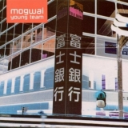

Top 100 Albums of 1990-1999 (Part Three: 100-81)
By No Ripcord Staff
If you were there, the 90s were an exciting and culturally rich decade. If you weren't... it's still true, go back and check it out! You could do far worse than to start your retrospective with any of these records which, following a long voting and counting process, have been granted places 100-81 in our list to end all lists. Let us know what you think using the Disqus form at the end of the article.
[Bubbling Under] | [Writers' Picks] | [100-81] | [80-61] | [60-41] | [40-21] | [20-16] | [15-11] | [10-6] | [5-1]
100. Mogwai
“Young Team”
(Chemikal Underground – 1997)
Young Team is an album that educates you in the art of instrumental music - proving that it can be just as expressive as music with vocals, if not more so. From the blissed-out bassline of opener Yes! I Am A Long Way From Home, to the terrifying crescendos of Like Herod, Young Team is an emotional soundscape that’s hard not to get lost in. Then again, R U Still In 2 It?, the only track with a singer, brings things straight back down to earth with Aidan Moffatt (of Arab Strap)’s sleepy vocals pouring pure heartache into a tale of a relationship nearing its end. Joel Stanier
Playlist: Yes! I Am A Long Way From Home
99. The Orb
“The Orb’s Adventures Beyond The Ultraworld”
(Big Life – 1991)
If you want an album that, quite simply, sounds like being on drugs, this is it. The Orb’s ongoing fascination with space and the universe is put to good use, creating an album that is at times comforting, and at other times slightly disturbing in its otherworldliness. It’s definitely not an album you can dive straight into due to its length (it clocks in at almost two hours) and track running times, some tracks reaching prog-rock epic lengths, but if you allow yourself to soak into the atmosphere that Alex Paterson and various collaborators create with radio samples, it’s a highly rewarding listen. Richard Petty
Playlist: Little Fluffy Clouds
98. The Smashing Pumpkins
“Mellon Collie And The Infinite Sadness”
(Virgin – 1995)
It’s a shame that Mellon Collie And The Infinite Sadness continues to be looked upon as a memory of youth, one that you’re meant to outgrow as your taste becomes more refined. The two-hour, double disc set is certainly ambitious in scope, and there have been countless features that argue and theorise on how cutting it to fourteen tracks would’ve turned it into the perfect album, but its sprawling excess is precisely what makes it an essential listen. Corgan, always intrigued with the enigma of love, approaches the celestial, sonic layering with a fantastical, colourful whirlwind of imagination, bent on exploring the star-crossed romanticism of lovers with a larger-than-life scale of Shakespearian proportions. Why it’s become such a taboo listen can be attributed to its angst-ridden, and other times overly elaborate lyrics. Nevertheless, rarely can an album be described as inimitable, which remains its greatest merit. Juan Edgardo Rodriguez
Playlist: Muzzle
97. Beck
“Midnite Vultures”
(DGC – 1999)
I was actually shocked to realise how early this album was released, which speaks both to Beck’s staying power and the almost unbelievable variety of his albums. Midnite Vultures is hands down the sexiest, most fun record in Beck’s impressive oeuvre. It’s a saucy, 70s-inspired dance marathon that feels equal parts disco, upbeat porn soundtrack and melodic hip-hop. On Midnite Vultures, Beck is a spacey futuristic superhero. His lyrics are inventive, seductive, “and make all the B-boys scream.” With the exception of the somewhat out of place (but prescient!) slow beauty of Beautiful Way, the whole record is a contagious turn-on: a little dirty, but so exciting. Gabbie Nirenburg
Playlist: Milk & Honey
96. Angelo Badalamenti
“Soundtrack From Twin Peaks”
(Warner Bros. – 1990)
The first season of Twin Peaks was the greatest TV series ever broadcast on a major American network, and the music by longtime Lynch collaborator Angelo Badalamenti was crucial to its success. It’s all about the contrasts: the scoring of ‘50s kitsch with modern synths, the tender harmonies that turn dark, and vice versa. The recruitment of ethereal vocalist Julee Cruise was another stroke of genius, her whispered chants a ghostly presence throughout the series, like its central character, Laura Palmer. Anyone sentient during the early 90s need only hear two measures of the main theme to recognize a true cultural artefact; anyone who watched the series will feel a quick, involuntary shudder. Alan Shulman
Playlist: Twin Peaks Theme
95. Slowdive
“Souvlaki”
(Creation / SBK – 1993)
Slowdive’s debut album, Just For A Day, was an interesting enough affair, but didn’t live up to the potential of their early EPs. By the time Souvlaki came round, they’d upped their game to the degree they were even able to rope in Brian Eno to help on a couple of tracks. Where the album really succeeds is main songwriter Neil Halstead’s ability to merge the waves of guitar noise with actual pop tunes. Opening track, Alison, had a chorus as infectious as anything else at the time, though Souvlaki Space Station showed they could still lay on a racket when they felt like it. Yet nobody caught on, and a music press still in thrall to grunge would eventually move onto the retro sounds of Britpop. While low sales and a disastrous relationship with their American label killed Slowdive off, Souvlaki remains a high point of the shoegaze sound. DC Harrison
Playlist: Souvlaki Space Station
94. Portishead
“Portishead”
(Go! / London – 1997)
Portishead turned the dark up on their second LP, Portishead: the follow-up to the hugely successful and genre-defining Dummy. Using ‘60s spy movie samples, distorted vocals, DJ scratching and slow-motion beats, the band took American hip-hop and torch songs, and twisted them into almost unrecognisable shapes that were more chilling than chilled-out. This record is packed with a sense of dread and tension that never resolves, and the crumpled beauty of Beth Gibbons' vocal calls from an anguished soundworld somewhere beyond the grave. To many, Dummy will always be their best work, but Portishead is worth another listen. It's better than you remember - even if it does lack the buzz and excitement that was generated by their debut. Gary McGinley
Playlist: All Mine
93. The Verve
“Urban Hymns”
(Hut / Virgin – 1997)
Urban Hymns is packed with songs that are so irresistibly catchy, so ingrained into the British rock n’ roll psyche, that I should be sick of it by now. But this album has outlasted nearly all of the other successful records of its time, and it’s the authenticity that does it. Richard Ashcroft has arguably one of the strongest voices in rock, one that conveys real emotion, coupled with an ability to write expertly-crafted songs and endlessly singable lyrics. A special mention also goes to lead guitarist Nick McCabe, whose spaced-out tones add another dimension to simple songs that would work almost as well with little more than an acoustic guitar. Joel Stanier
Playlist: Bittersweet Symphony
92. Pixies
“Bossanova”
(4AD – 1990)
Not as packed with gems as Surfer Rosa or Doolittle, and emblematic of the band’s growing tension, Bossanova marks the beginning of the end of Pixies’ grandeur. Of course, it’s still full of all the glorious weirdness that Frank Black has championed. While it suffers from a lack of any songs written by legendary bassist Kim Deal, the album is a solid journey through Black’s signature brand of surf-rock surrealism. In fact, Bossanova is Black Francis’ power trip, a space cadet’s tour-de-force. Even without any true standouts (excepting Velouria and Dig For Fire, and maybe Havalina, but I think I’m alone in that one), this record is a defining moment for college rock. Best listened to all at once, start to finish, preferably blitzed out of your mind. Gabbie Nirenburg
Playlist: Dig For Fire
91. Rage Against The Machine
“Rage Against The Machine”
(Epic – 1992)
More or less every artist who has tried to emulate Rage Against The Machine’s sound has failed miserably to create anything worthwhile (Kid Rock, Limp Bizkit) - and perhaps that’s because the whole idea is fairly preposterous. Funk metal and rap just shouldn’t go together, but Rage found arguably the only way to make it work, with Zack De La Rocha’s furious political diatribes amplified and energised by the band’s relentless grooves. Of course, they did always have an unfair advantage in the form of guitar overlord Tom Morello, who blitzes his way through this record with peerless technique and a bloody good effects rack. It’s renowned by audiophiles as a great recording too - well worth investing in a great sound system or set of headphones for. Joel Stanier
Playlist: Bullet In The Head
90. The Roots
“Things Fall Apart”
(MCA – 1999)
Philadelphia area hip-hop ensemble, The Roots, stand apart from many of their peers as a group that understand music beyond the conventional practice of tweaking knobs and looping samples. Piggybacking the notoriety the band had received with their 1996 album, Illadelph Halflife, Things Fall Apart realised the band at their most melodically rich and compositionally sound, MCs Black Thought and Malik B. bulletproof in their articulation and rhyme. Jazzy and soulful, few albums in hip-hop demonstrate this level of musical sophistication, songs like The Next Movement, Step Into The Realm, Ain’t Sayin’ Nothin’ New and Act Too… The Love of My Life (performed alongside Common) attentive not only to flow and cohesion, but subtlety and mood. The band earned a Grammy for the single, You Got Me, which they performed with Erykah Badu and then-newcomer, Eve. As of 2013, Things Fall Apart has been certified Platinum. Sean Caldwell
Playlist: Step Into The Realm
89. The The
“Dusk”
(Sony – 1993)
Late night, feeling a little bit down, what’s your go-to album? Me too: Dusk! The straining voice of lovelorn Matt Johnson has always had a comforting effect since The The’s debut, Soul Mining. His everyman, I-know-how-you-feel appeal puts you in mind of a British Michael Stipe. But instead of Peter Buck, Matt Johnson had Johnny Marr, offering his unique, shimmering guitar sound. It’s a match made in heaven (Marr tends to suit miserable loners who’ve never felt peace upon the breast of a girl) as Marr’s guitar transforms Johnson’s slightly silly crooning into perfect indie-pop, best displayed on Sodium Light Baby. Dusk would be easy to dismiss as self-involved twaddle if The The didn’t have such a knack for catchy choruses, or a self-awareness that raises the odd wry smile. It always makes you feel a little bit better. James McKenna
Playlist: Sodium Light Baby
88. Kyuss
“Welcome To Sky Valley”
(Elektra / Chameleon – 1994)
Progenitors of the “stoner rock” scene and precursor to Queens Of The Stone Age, Kyuss were a smoked out madman of the desert and Welcome To Sky Valley was their finest moment in the red sun. I recall Welcome To Sky Valley as being the first album I’d ever considered to be meant exclusively for headphones, its ethereal charge seeming to span miles from its point of origin; guitarist Josh Homme’s retro-psychedelic tone brandished like rusty cutlery and permeating its aural barriers of sand and stone. From the opening notes of Gardenia, I was captivated: singer John Garcia’s throat raw against the chugging walls of thick bass rhythm and grinding riffs, an old sound for modern times. Shades of what would ultimately play into QOTSA’s sound can be found in Supa Scoopa And Mighty Scoop and the album’s single, Demon Cleaner. Sean Caldwell
Playlist: Odyssey
87. The Chemical Brothers
“Dig Your Own Hole”
(Virgin / Freestyle Dust – 1997)
The 1990s was an important decade in the life of dance and electronic music. As the popularity of acid house, techno and jungle faded, new genres including trance, breakbeat, trip-hop, and drum and bass developed to take their place such that, by the end of the decade, EDM had evolved into an entirely different animal. One of the key pioneers in the development of 1990s electronic music was The Chemical Brothers. The duo fused electronic music with other genres of popular music to create rockier dance music with more mainstream appeal. It was an approach which started with their debut, Exit Planet Dust, but it was their second album, Dig Your Own Hole – featuring UK number 1 singles Setting Sun and the classic Block Rockin’ Beats, which kickstarted a career of high-charting hits for The Chems. Craig Stevens
Playlist: Setting Sun
86. Faith No More
“Angel Dust”
(Slash – 1992)
Following the commercial success of The Real Thing, Faith No More’s Angel Dust formed more of a musical identity for Mike Patton, who had a hand in its creative development. An experimentally harsh, though beautifully rendered work, Angel Dust is a heavily refined and schizophrenic work of alt-rock brilliance, a captivatingly bizarre combination of theatricality (Land Of Sunshine, Crack Hitler), parody (RV, Be Aggressive), heavy emotion (Smaller And Smaller, Kindergarten) and an ensemble approach to metallic severity (Malpractice, Jizzlobber). For me, the album is one of the most cohesive and expressive artefacts of my teenage years, its existence alone a testament to dysfunctional partnerships and the discomfort and risk associated with creative growth. Everything’s Ruined is, to me, one of the greatest rock songs ever recorded. Sean Caldwell
Playlist: Everything’s Ruined
85. Massive Attack
“Protection”
(Circa / Virgin – 1994)
Blue Lines and Mezzanine tend to garner all the plaudits in the Massive Attack canon, while sandwiched between them sits Protection, a generally overlooked minor masterpiece. To these ears at least (apart from the miraculous Unfinished Sympathy and Daydreaming), Blue Lines can sound somewhat dated, while Mezzanine’s unremitting gloom can become too much after a full album’s worth. Protection is where it all comes together. The title track is a beautifully constructed chill-out classic with majestic vocals from Tracey Thorn of Everything But The Girl; Tricky’s vocals on the spooked hip-hop of Karmacoma and Eurochild paved the way for him leaving the group and going his own way; while the instrumentals Weather Storm and Heat Miser work brilliantly in the context of the album, despite sounding like The Alan Parsons Project. David Wood
Playlist: Protection
84. Sugar
“Copper Blue”
(Rykodisc / Creation – 1992)
Few things evoke the early ‘90s quite like the grubbily distorted melodies of grunge, and Sugar’s debut more than earns its place alongside the recognised titans of the movement. In fact, the album arguably takes the template further; for all of the unexpected pop nous of the genre’s heroes, you wouldn’t expect any of them to turn in something like the joyfully cheap sounding keyboard riff of Hoover Dam. Copper Blue also has a certain bite that’s entirely its own, whether immediate – the snarl of frontman Bob Mould (formerly of the extremely influential Hüsker Dü) during A Good Idea’s chorus - or ones that need a bit of digging underneath the squalling guitars to uncover – The Slim’s account of watching a loved-one succumb to AIDS. The fact that the album leaps from this to the jaunty break-up number If I Can’t Change Your Mind is both admirable and incredible. Mark Davison
Playlist: The Slim
83. The Breeders
“Last Splash”
(4AD / Elektra – 1993)
I may be in a minority here, but I always preferred Kim Deal to Frank Black. She and Tanya Donnolly formed The Breeders as an outlet for songs Pixies never got round to doing, but by Last Splash, Deal’s twin sister Kelley had come in too. It’s actually Kelley who gets the best single moment on the album (“If you’re so special, why aren’t you dead?”) but in the main, Kim shows she can easily front a kick-ass rock band. Saints was tough, but Do You Love Me Now? was sugar-sweet and sad. There was Pixies-esque weirdness, and it ended with a country ballad, Drivin' On 9. Not long after all this, the version of the band broke up, but you wonder if the success of Last Splash (easily outselling any Pixies album) afforded Kim Deal a well-deserved smug smile of vindication. And do I even need to mention Cannonball? DC Harrison
Playlist: I Just Want To Get Along
82. Guided By Voices
“Alien Lanes”
(Matador – 1995)
Bee Thousand or Alien Lanes? The debate constantly rages on, as few artists in indie rock could claim to have two albums so adequately fit to be the bands go-to classic. But what people often don’t understand is that they’re two halves of one essential experience, and while Bee Thousand cemented the group as lo-fi indie rock weirdos, Alien Lanes comes in to solidify the group as a kick-ass rock n’ roll band. Sure, the robust, 28-track album isn’t short of strange pop curiosities, but it’s hard to think of anthemic jams like Watch Me Jumpstart and Motor Away without picturing Robert Pollard’s signature high kicks and Daltrey-inspired stage theatrics. But what’s really impressive is how GBV can write complete, memorable songs like Gold Hick and Hit, and fire them off in only a few seconds. Great rock songs don’t exist in a more tightly compacted space. Peter Quinton
Playlist: Motor Away
81. Scott Walker
“Tilt”
(Fontana – 1995)
Tilt is quite literally the most uncomfortable album I’ve ever had to sit through, and I mean that in an absolutely fantastic way. Tilt is composed of sounds that can only be found in the most beautiful of nightmares: a musical maelstrom of anonymous noisemakers, wailing narration, silky strings, and suffocating atmospheres. Yet for all of its unsettling barrenness, there’s an unmistakable sense of orchestration to each recording, as if Walker had mulled over each individual sound for hours to properly harness its potential bleakness. But so is the genius of Walker, a man widely known for lurking in the shadowy corners of recording studios, occasionally stepping forward to glide his fingers over the faders of a console, only to quickly retreat back into the blackness. Andrew Ciraulo
Playlist: Farmer In The City
You can continue the list-based fun... HERE!
26 June, 2013 - 07:51 — No Ripcord Staff